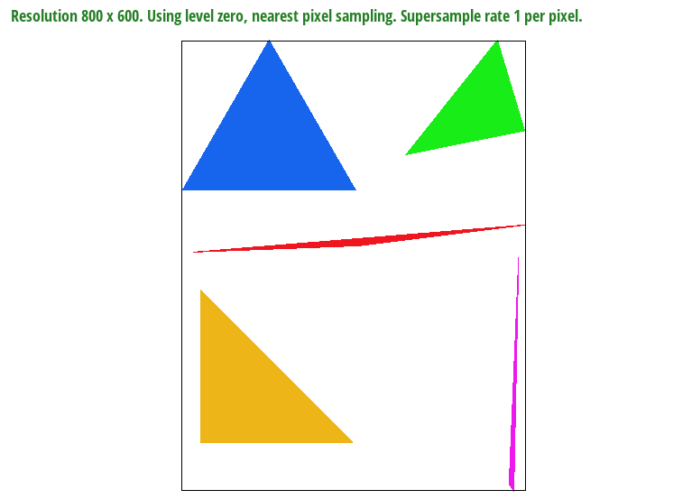
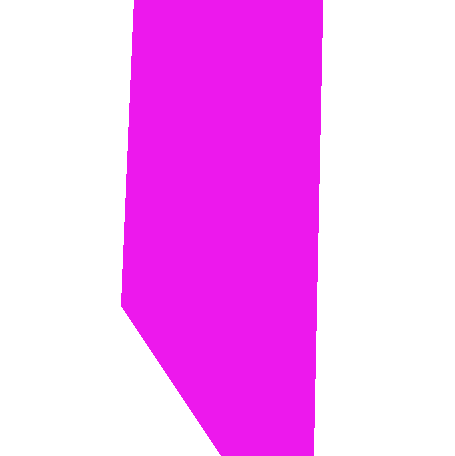
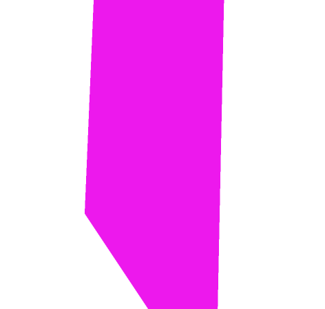
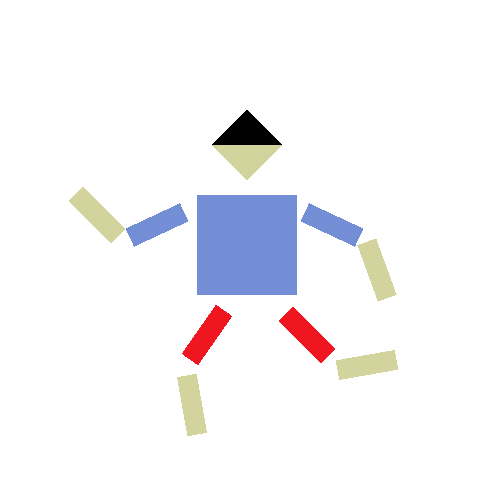
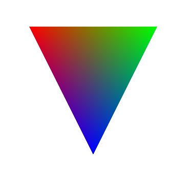
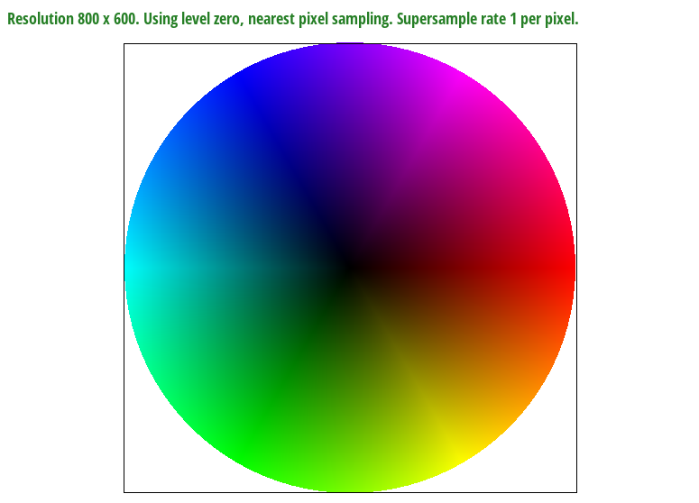
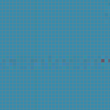
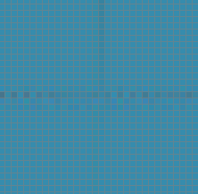
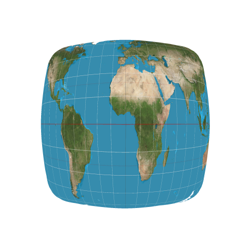
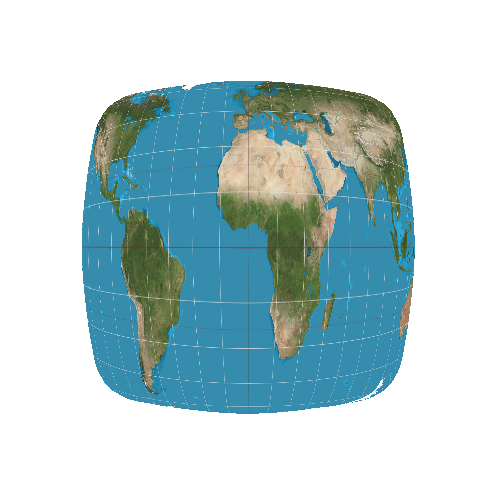

Give a high-level overview of what you implemented in this homework. Think
about what you've built as a whole. Share your thoughts on what
interesting things you've learned from completing the homework.
Task 1: Drawing Single-Color Triangles
To rasterize triangles, I sampled every point within the bounding box of
the triangle and rasterized a point for every sample that was inside the
triangle. Of course, not forgetting to also rasterize the edges of the
triangle. As mentioned, this algorithm samples every point within the
bounding box, so it is no worse than it, but also no better than it.

Task 2: Antialiasing by Supersampling
Supersampling works by sampling at higher resolutions, then downsampling
by taking the average. This helps antialias triangles as it provides a bit
of a blurring effect on the edges, helping to smooth the previously jagged
pixels due to sharp cutoffs.
In order to implement this behavior, the sample buffer had to be resized
so that we can sample it at higher resolutions. To ensure that lines and
points are still rasterized correctly, the
fill_pixel function was modified to fill in the surrounding
area so that the entire pixel will be filled in when we downsample later.
To rasterize triangles, the main modification needed was to scale the
vertices proportional to the higher resolution sample space. This played
well with the original algorithm, as it only worked with the position of
the triangle vertices.

Sample rate 1

Sample rate 4
Sample rate 16
Task 3: Transforms
Using rotation and translate transforms, we can make it so the cubeman
looks like he's on a run. Of course, proper transform groups makes this a
lot easier.

Task 4: Barycentric coordinates
Barycentric coordinates are a way to define a point inside a triangle. It
uses three coordinates (alpha, beta, gamma) to do so. If the vertices of a
triangle are A, B, and C, then alpha describes how close the point is to
vertex A, in proportion to beta and gamma. If it's 1, then it's right at
the vertex, if 0, then it's as far away from that vertex as it can be.
Similarly, beta describes that for vertex B, and gamma for vertex C.
For demonstration, take a look at the image below. The top left vertex has
the color red, the top right green, and the bottom blue. The closer a
sample point is to the vertex, the more the pixel approaches that vertex's
color.

Using barycentric coordinates, we can render the test 7 image of a color
wheel.

Task 5: "Pixel sampling" for texture mapping
Pixel sampling methods determine which pixels of the texture map onto the
sample. Nearest neighbor sampling selects the nearest pixel in the
texture, whereas bilinear sampling interpolates between the 4 closest
points.
To implement texture mapping, I used the Barycentric coordinates for each
pixel to interpolate the UV coordinates of the vertices. Then, I can
simply sample from the texture using that UV coordinate, making sure to
map it according to the texture dimensions. The resulting pixel sampled is
determined by the pixel sampling method.

Nearest

Bilinear
With nearest sampling, some details can be missed, like the red vertical
line. Bilinear sampling helps us capture at least a little bit of that
information without needing to supersample.
Nearest, 1 sample per pixel

Nearest, 16 sample per pixel

Bilinear, 1 sample per pixel
Bilinear, 16 sample per pixel
Bilinear sampling helps smooth out jagged edges without the need of
supersampling. However, when we do use supersampling, the difference in
nearest sampling vs bilinear sampling becomes hard to discern.
There will really only be a difference between nearest and bilinear when
the difference between the current sampling rate and the next (to the
power of two) is noticeable. For instance, when the sampling rate is 1.
This is because bilinear sampling is very similar to super sampling, as it
takes the interpolation of the closest 4 points. Thus, as the difference
is sampling rates become less noticeable, so too will the difference in
nearest neighbor and bilinear sampling.
Task 6: "Level Sampling" with mipmaps for texture mapping
Level sampling methods determine which level of the mipmap to use, which
in turn determines the texture(s) to sample from. Zero level sampling
defaults to level 0, which is the highest quality texture. Nearest level
sampling chooses the level that more closely matches the texture frequency
to the sample frequency, reducing aliases. Bilinear level sampling
interpolates between the two closest levels to achieve a continuous level
effect.
To implement this, I first computed du/dx,
dv/dx, du/dy, and dv/dy to use in
the level calculations. Next, I simply used the formula in lecture 5,
slide 65 to compute the level. This is sufficient for nearest level
sampling.
For bilinear level sampling, I sampled twice, once for
floor(level) and another for floor(level)+1.
Then, I linearly interpolated the colors from the resulting samples using
the fractional amount in the level calculations. The resulting color is
the output for linear level sampling.
Here's a look at the tradeoffs between the three methods:
Method
Speed
Memory Usage
Antialiasing Power
L_ZERO
Fastest
Low
Worst
L_NEAREST
Medium
Medium
Medium
L_LINEAR
Slowest
Highest
Best
Nearest level, nearest pixel
Nearest level, bilinear pixel
Bilinear level, nearest pixel
Bilinear level, bilinear pixel (trilinear)
(Optional) Task 7: Extra Credit - Draw Something Creative!